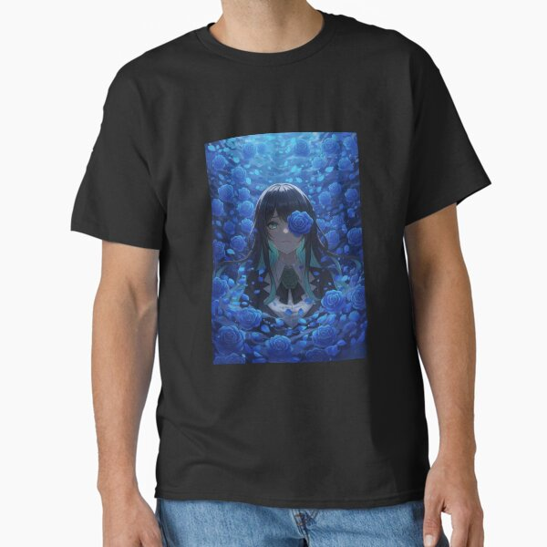

T-SHIRTS / ADO UTAITE FAN ART
Ado
Blue Rose Garden T-Shirt
An expressive illustration of Japanese Utaite singer Ado framed by blooming blue roses (Chando), designed for high-contrast impact on dark streetwear.
View T-Shirt on Redbubble ↗Check live pricing, fabric colors, sizes and worldwide shipping options on Redbubble.
Artwork & Chando Utaite Inspiration
The blue rose—known across the fandom as Chando—symbolizes miracles and dreams realized against the odds. This illustration pairs Ado's unmistakable piercing gaze and shadowy silhouette with cobalt botanical petals, capturing the intensity of tracks like Usseewa, RuLe and Show.
Sizing, Material & Fit Guide
Designed to pop against black and dark navy fabrics. For an oversized Japanese streetwear or Hibana concert look, consider sizing up one level after comparing the flat chest and length measurements in the garment size chart.
Independent Ado Fan Art by Oddloop42
Illustrated in Buenos Aires by Oddloop42 for J-pop, anime and Utaite fans worldwide. This is independent fan-made art inspired by Ado and is not official merchandise.